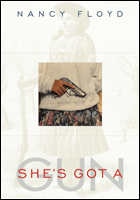

A fascinating, revealing look at women who own-and use-guns
A fascinating, revealing look at women who own-and use-guns


 A fascinating, revealing look at women who own-and use-guns
A fascinating, revealing look at women who own-and use-guns

|  |
She's Got a GunNancy Floydpaper EAN: 978-1-59213-155-6 (ISBN: 1592131557) |
"She's Got a Gun is entertaining and informative. Moreover, Floyd's wonderful writing voice has a genuineness that made me trust what she told me. The continuous moving back and forth between real-life gun experiences and representations of gun-toting women in movies and books works really well. This book will have enormous popular appeal."
—Martha McCaughey, Director of Women's Studies, Appalachian State University, and author of Real Knockouts: The Physical Feminism of Women's Self-Defense.
In 1991 Nancy Floyd bought her first handgun. Soon she was participating in Ladies Day at her local shooting range and reading Women & Guns magazine. In 1993 she began interviewing and photographing women who were fellow gun owners. In 1997 she started researching "gun women" from the past to see how they were represented in the popular imagination. Now she has brought her work together in a riveting new book, filled with remarkable photographs and candid first-person stories, accompanied by an eye-opening illustrated history of female gun ownership in America.
Sympathetic but unsentimental, Floyd presents gun-toting women young and old, including an eleven-year-old girl competing in her first gun competition, a woman whose grandmother was killed by an intruder, and a war veteran who experienced firefights while stationed in Iraq. Whatever you might think about gun-toting women before you open this book, your preconceptions are sure to be shattered by the end.
Excerpt available at www.temple.edu/tempress
"The book's greatest strength is the unique perspective Floyd brings as a documentary photographer, a specialist in visual images and their power�her passion for her subject, her no-nonsense attitude, and her comprehensive perspective on the subject of women and guns. And Floyd�s framing of her discussion through references to her family history, and more especially her relationship to her lost brother, is a very effective device both for personalizing her discussion and for drawing the reader into it."
—Mary Zeiss Stange, Professor and Director of the Women's Studies Program at Skidmore College, and author of Woman the Hunter
"Floyd presents a definitive picture of how American culture has portrayed women and guns, from the days of Wild West dime novels to those of pulp-fictional and Hollywood Westerns to the present�.A great resource on an underappreciated sector of American culture that is knockout entertaining, to boot; the book hits the bull�s-eye for history buffs and firearms enthusiasts alike."
—Booklist
"[A]n interesting mixed genre book of photographs, archival images, personal narrative, history, and cultural analysis on women and guns�. The collection of historical images, including professional and family photographs, advertisements, and posters, is a visual treat. The breadth of the book�s coverage is impressive."
—Choice
"Floyd�s portraits of women gunowners, which range from a pre-teen girl to mature mother-daughter duos, all tell us something about not just the subjects, but ourselves�. [T]he [book] is interesting, lively, opinionated, passionate and strong�just like the author."
—Women & Guns
"[A]n interesting hybrid of memoir, cultural history, and�most successfully�photographic documentary. She's Got a Gun is full of amazing photographs�both archival pictures and portraits taken by Nancy Floyd. The historic images she presents in this work force us to reconsider our ideas about armed women in American culture...Equally remarkable are Floyd's own portraits of armed women....The portraits are beautifully composed and full of interesting details...the net effect of these portraits is to make readers aware of the sheer diversity of female gun owners in this country, past and present. The interview excerpts that accompany many of these portraits further complicate and enrich the visual images....Floyd's archival photo research and her efforts to connect with her lost brother through the firearms he loved, though, offer a vivid and evocative tour through the surprising world of women firearms owners."
—Winterthur Portfolio
Acknowledgements
Introduction
Part I. Pleasure: Sports Shooting, Entertainment, Fiction
1. Guns 101
2. Shooting Like a Woman
3. Shooting Stars: Calamity Jane and Annie Oakley
4. Look Out! She's Got a Gun!
Part II. Power: Self-Defense
5. All Things Being Equal
Part III: Professional: Polica and Military
6. Direct Fire
Epilogue
Notes
Bibliography
Index
 | Nancy Floyd is Associate Professor of Photography, Ernest G. Welch School of Art and Design, Georgia State University |
Women's Studies
Art and Photography
American Studies
© 2015 Temple University. All Rights Reserved. This page: http://www.temple.edu/tempress/titles/1809_reg.html.